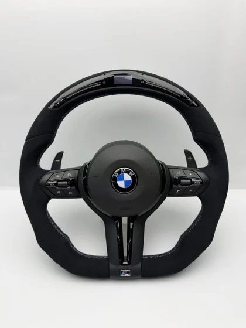
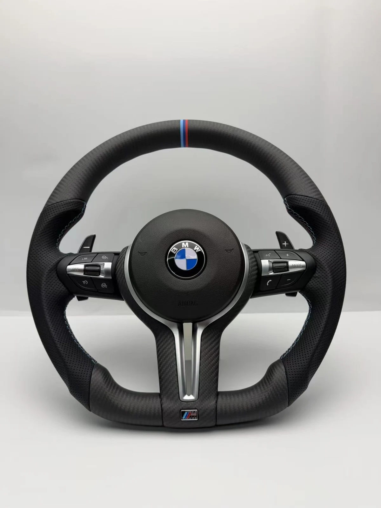
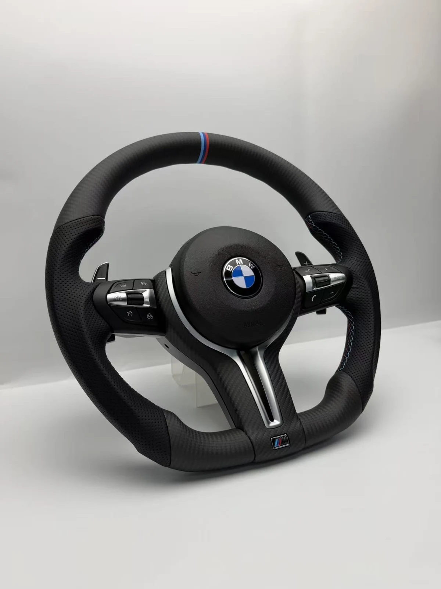
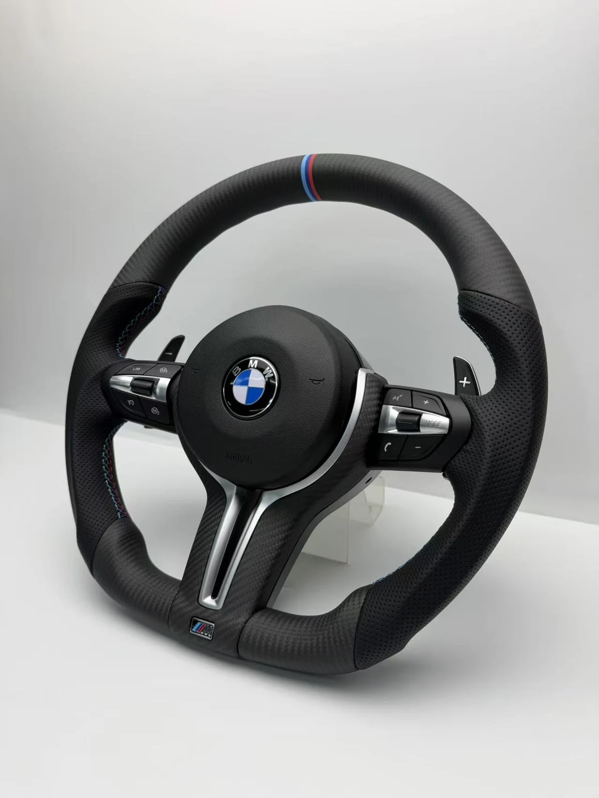

Руль № F80 — BMW F-серии



Под заказ
Цена по запросу
В Telegram откроется сообщение: «Хочу руль № F80 (BMW F-серии)».
Руль № F80 из каталога BMW F-серии.
Под заказ — изготовление около трёх недель.
Материалы и отделка: Матовый рисунок под карбон, перфорация и трёхцветная метка.
Совместимость с вашим автомобилем подтверждаем перед заказом по кузову, году и фото штатного руля.
Предоплата 3 000 ₽ (5 000 ₽ для рулей от 50 000 ₽), гарантия на руль 6 месяцев.
Подобрать на свой кузов
F20 / F21 / F40 · 1 серияF22 / F23 / F44 / F45 · 2 серияF30 / F31 / F35 · 3 серияF32 / F33 / F36 · 4 серияF10 / F11 / F18 · 5 серияF06 / F12 / F13 · 6 серияF01 / F02 / F03 · 7 серияF48 / F49 · X1F39 · X2F25 · X3F26 · X4F15 · X5F16 · X6F87 · M2F80 · M3F82 / F83 · M4F10 / F90 · M5F06 / F12 / F13 · M6F91 / F92 / F93 · M8F34 · 3 GTF07 · 5 GT
Доставка и оплата
- Доставка по России и в другие страны (отправляем во все страны, где есть СДЭК).
- Самовывоз в Одинцово, 24/7 — договоритесь с менеджером о времени.
- Предоплата 3 000 ₽ (5 000 ₽ для рулей от 50 000 ₽), остальное при получении.
- Срок: под заказ около трёх недель.
- Гарантия на руль — 6 месяцев.